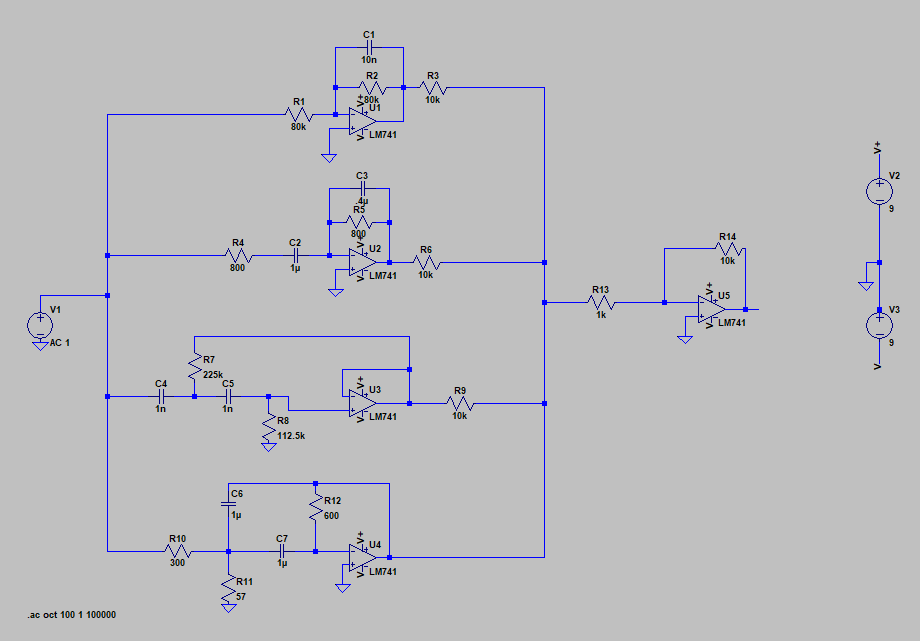

Frequency Driven Display
Introduction
For this project, I built a music driven light up display. The objective of the design was to get a range from 0 freq - 1000+ freq. Four types of filters were used: lowpass, highpass and 2 bandpass filters each aimed at channeling different frequencies. The output of each filter was connected to a series LED lights that would light up when the given frequency fit the ranges of each filter. The frequency was provided through a 3.5mm audio jack but this alone didn't have enough voltage to power the LEDs and therefore it was paired with operational amplifiers and potentiometers to amplify the voltage.
 Specifications
Filter Cutoff Frequencies:
- Lowpass: 200Hz
- 1st Bandpass: 200 - 500Hz
- 2nd Bandpass: 500 - 1000Hz
- Highpass: 1000Hz
With these cutoff frequencies I was able to calculate different resistor values for each corresponding filter. Then after intense simulation of each filter as well as the overall circuit, I finally built the circuit itself.